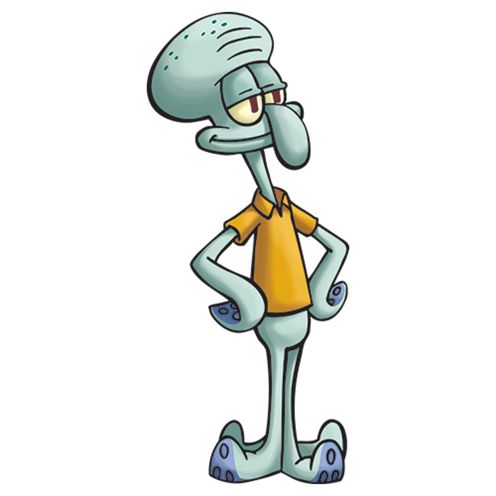

3)Сквидварт Тентаклс

Описание:
Сквидвард — человекоподобный осьминог, который живёт в жилище, похожем на статую моаи, между домами Губки Боба Квадратные Штаны и Патрика Стара. Персонаж изображён как вспыльчивый и претенциозный. Он с неприязнью относится к соседям и их постоянному шумному поведению, о чём Губка Боб и Патрик не догадываются и ведут себя с ним как друзья. Сквидвард работает кассиром в ресторане «Красти Краб», но ненавидит эту работу.
День Рождения:9 октября 1977 г
Пол:Мужской
Рост:17,2 см.
Вес:14 кг.
Интересные факты:
-У Сквидварда есть отчетливый смех, который всегда заставляет его нос раздуваться и сдуваться, что, скорее всего, является ссылкой на сократительную мантию осьминога.
-Высота Сквидварда относительно мистера Крабса изменяется в зависимости от эпизода. Он иногда кажется намного выше, иногда одного роста, считая глазные яблоки Крабса в некоторых других сценах.
-У Сквидварда аллергия на мореягоды, улиточную слизь и орехи.
-В Книге глупостей указано второе имя Сквидварда — Куинси.
-Когда Сквидвард краснеет, его нос также имеет красный оттенок, как и его щеки.
-Сквидвард — осьминог, несмотря на то, что у него четыре ноги. Это было сделано, чтобы аниматорами было легче анимировать и функционировать персонажа.
Назад